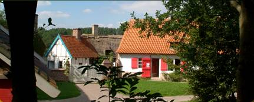
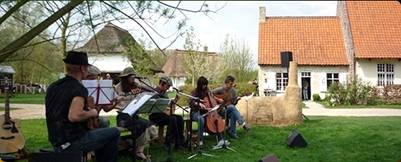
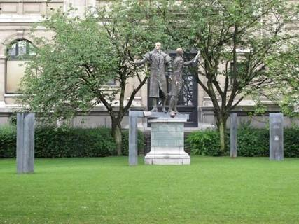
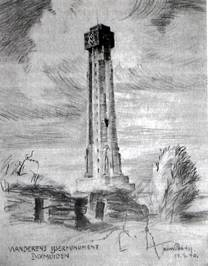

> nieuwsbrief
> 30e jg. - 3e trimester
2012
| Bijdragen over: | Tip |
Hernieuwen
ledenbijdrage 2012
Als verduidelijkt in ons vorig nummer zagen we ons verplicht de basisbijdrage op te trekken tot 29 . In de bijdrage is als vanouds het abonnement op onze Zannekin-nieuwsbrief en op het al 34e Jaarboek De Nederlanden extra muros begrepen.Dit is een laatste aanbod dat het mogelijk maakt om zich ons jaarboek 2012 tegen ledenprijs aan te schaffen. Vanaf 1 augustus geldt voor iedereen de boekhandelprijs als vermeld op pagina 2.
Twintig
gebouwen van de regio Nord-Pas de Calais of Vlaanderen-Artesië werden
gered van
de sloop en herrezen als getuigen van onze landelijke beschaving van de
17e,
18e en 19e eeuw. Een smidse, een bakkerswoning, lemen huisjes met
rieten daken,
houten gebouwtjes te midden van tuintjes, boomgaarden en weiden met
heggen zijn
er te bewonderen. Dieren ontbreken evenmin. kippen, ezels, eenden en
kalkoenen
lopen er rond. Ambachtslieden beoefenen oude beroepen.
Adres: Musée de Plein Air, 143, rue
Colbert, F. 59493 Villeneuve dAscq
 Beeld van het Openluchtmuseum
te Villeneuve dAscq
Ontwerp
van Programma - zaterdag 29 september 2012
11.45 uur: Verwelkoming in het
Musée de Plein Air of Openluchtmuseum te Villeneuve
d'Ascq door
12.35 uur: Vlaams middagmaal.
13.45 uur: Rondleiding door
het Openluchtmuseum.
15.45 uur: Vlaamse volksmuziek
gebracht door Frans-Vlamingen (doedelzak, oude instrumenten, liederen).
16.30 uur: Vieruurtje.
17.15 uur: Terugkeer (busrit)
via Quatre Cantons Doornik Mark naar Halle
De deelnamemodaliteiten en
-prijs leest u in onze
volgende Nieuwsbrief. Reserveer
alvast de datum van 29 september.
Op zondag 8 juli mochten we in het
Frans-Vlaamse Bambeke een zeer
geslaagd Vlaams Feest meemaken, georganiseerd in samenwerking tussen
de
Werkgroep de Nederlanden, het Davidsfonds Frans-Vlaanderen, Euvo en de
Michiel
de Swaenkring. Duivel-doet-al Karel Appelmans kan met recht en reden
terugkijken op een zeer geslaagde activiteit, waarvoor hij de
entousiaste
medewerking van o.m. de doedelzakspekers van Sakanotes uit Steenvoorde
en het
Antwerpse Scheldekoor wist vast te leggen.
De dag ving aan met een tweetalige
eucharistieviering opgedragen door de
E.H.
Naderhand volgde een vriendemaal in de
stemmige nabijgelegen zaal
Yserhof, waarbij de historicus

Tussendoor
viel de samenzang in de smaak en luisterde het Steenvoordse
doedelzakensemble
Sakanotes het feest om met zang en volksmuziek en kwam de Vlaamse
viceminister-president
Geert Bourgeois verwelkomd door de Bambeekse maire - de aanwezigen
een hart
onder de riem steken met een stevig pleidooi aan het adres van de
Frans-Vlamingen
om, naast hun streektaal ook het Algemeen Nederlands aan te leren.
Als kers op de taart van deze ten volle
geslaagde dag kreeg Karel
Appelmans bovendien het verzoek om in de nabije toekomst ter plaatse
een cursus
Nederlands te organiseren ten behoeve van het gemeentelijk personeel
van
Bambeke en de omliggende gemeenten.
Deze reeks jaarboeken is ondertussen reeds
aan zijn
34e aflevering toe. Zoals altijd begint ook dit deel met de tekst die
de
doelstelling van Zannekin verwoordt. Die beginselverklaring begint
aldus: De
doelstelling van de Vereniging/Stichting zannekin
is het thuisfront te zijn van iedere persoon en iedere vereniging, die
er naar
streeft een Nederlands volksbewustzijn op te wekken, te versterken of
in stand
te houden in alle gebieden binnen onze oudste volksgrenzen, vooral deze
welke
in de loop der tijden geheel of gedeeltelijk naar de taal geromaniseerd
of
verduitst werden. Op basis van deze doelstelling worden de
bijdragen in
dit en vorige jaarboeken gekozen. Uit deze aflevering pikken we er
enkele uit.
Zo kan men een tekst lezen van E.H.
In de eerste jaren van de 14e eeuw,
geïnspireerd door
de Guldensporenslag, kwamen de leden van de ambachten in Sint-Omaars in
opstand. Ze vroegen én kregen steun van Bruggeling Pieter de Coninck,
maar
uiteindelijk leken ze het pleit te verliezen: vijf leiders werden
verbannen of
geradbraakt. Toen kwam heel de stad in opstand: het kasteel van de
graaf werd
belegerd en verwoest en er volgden onderhandelingen met Vlamingen. Maar
toen
ging de Artesische ruiterij de stad belegeren en een Franse
legerafdeling trok
op tegen Sint-Omaars. Gevolg: de stad moest zich overgeven.
Niet alleen politiek maar ook economisch
was
Sint-Omaars op Brugge en Vlaanderen georiënteerd. Nog in 1430 stelden
de
schepenen dat de stad niet enkel Vlaamse stadsrechten had maar ook dat
de
moedertaal van de stad Vlaams was.
In een andere bijdrage behandelt Ludger
Kremer een
minder bekend en daardoor zeker interessant onderwerp: het Nederlands
als
voormalige minderheidstaal in Duitsland (p. 95-108). Daarin kan men
o.a. lezen
dat Noord-Duitse kooplieden tot in het begin van de 19e eeuw het
Nederlands
gebruikten als lingua franca. Heel
lang bestond er ook een vruchtbare uitwisseling tussen Duitse en
Nederlandse
theologen, kunstenaars, dichters en wetenschappers.
De auteur bespreekt dan in welke gebieden
in Duitsland
het Nederlands een functie had als cultuurtaal of slechts gebruikt werd
in een
enkel domein, meestal de kerk. Een en ander wordt verduidelijkt met
kaarten
onder andere van de verspreiding van het Nederlands in Duitsland. Hij
onderscheidt daarbij vier soorten Nederlands: het Rand-, Grens-,
Koloniaal- en
Exil-nederlands en gaat daar in verschillende hoofdstukjes verder op in.
In een laatste hoofdstuk behandelt hij wat
er is
overgebleven van het Nederlands in de (Neder-)Duitse dialecten. Die
restanten
zijn vooral te vinden in de Oost-Nederduitse dialecten en dat heeft
alles te
maken met het feit dat Hollanders, Brabanders, Vlamingen en Maas- en
Rijnlanders een groot aandeel hadden in de kolonisatie van de Duitse
gebieden,
de streek die nu als Der Fläming bekend staat. En de auteur besluit: dat
de Lage Landen niet alleen met hun immigranten tot de ontwikkeling van
de
Duitse cultuur hebben bijgedragen, maar ook met de Nederlandse taal in
zijn
verschillende vormen het Duitse dialectlandschap mee bepaald
hebben.(p. 108).
Zoals steeds sluit de rubriek Kroniek
en
boekbesprekingen het jaarboek af. Dit keer worden hierin enkele
boekbesprekingen opgenomen. In dit hoofdstuk wordt de bespreking
overgenomen
die eerder in ons tijdschrift gewijd werd aan het boek Vlaamse
migranten in
Wallonië (p. 198-202). Vooral jaarboeken worden in deze aflevering
besproken. Wat zeker ook mag vermeld worden is de bespreking van het
fijne
werkje van
Verzorgde illustraties en een lijst van
medewerkers
vervolledigen het eens te meer lezenswaardige jaarboek. Warm aanbevolen.
------------------
N.a.v. Jaarboek De
Nederlanden extra muros deel 34, leper, Zannekin, 2012, 208 p., II., ISBN
978-90-713263-18.
De zuidelijkste Nederlanden: Frans-Vlaanderen
Drs.
Wim Spapens
Noordwest-Frankrijk,
Frans-Vlaanderen, vormde in de tijd van Karel V, als deel van het
graafschap
Vlaanderen, de zuidelijkste Nederlanden. Nog steeds wordt onze taal
daar, met
name in de Westhoek, gekoesterd, nog steeds is het voor velen de
vraag of
onze vroegmiddeleeuwse geschiedenis (Bonifatius, Willibrordus, Nijmegen
e.d.)
zich daar heeft afgespeeld. Dat laatste is ook de vraag die veel SEMafoor-lezers1 boeit.
Frans-Vlaanderen,
gevormd door de regio Nord/Pas-de-Calais en een stukje van het
departement
Somme, bleef na de Vrede van Munster, die in 1648 onze Tachtigjarige
Oorlog met
Spanje besloot, behoren tot het door Spanje geregeerde Vlaanderen. Een
noordelijk stuk van dat Spaans-Vlaanderen, ons Zeeuws-Vlaanderen, werd
in
datzelfde jaar ingepikt door de Noordelijke Nederlanden, die door de
sluiting
van de Schelde de handel van Antwerpen wilden dwarsbomen.
Als
gevolg van de door Lodewijk XIV gevoerde oorlogen werd
noordwest-Frankrijk in
etappes door Frankrijk geannexeerd en verschoof de taalgrens van het
Vlaams
steeds verder noordwaarts.
Vanaf het
Verdrag der Pyreneeën (1659) tot de Vrede van Utrecht (1713) voegde
Frankrijk
met oorlogsgeweld tientallen Vlaamse steden toe aan zijn grondgebied.
Door zijn
huwelijk met Marie-Thérèse, dochter van de Spaanse koning Philips IV,
meende de
Zonnekoning, na de dood van zijn schoonvader in 1665, rechten te kunnen
laten
gelden op de Spaanse gebieden ten noorden van Frankrijk. De eerste
daarvoor
gevoerde oorlog, werd besloten met de Vrede van Aken (1668) en leverde
elf
steden op, waaronder Rijsel. Holland, bang voor het oprukkende
Frankrijk, had
een belangrijke rol gespeeld in de vredesbesprekingen en de Zonnekoning
wilde
dat het volk van kooplui en vissers betaald zetten. Dat betekende
oorlog met
Holland (1672-1678). Johan de Witt pleitte voor versterking van leger
en
vestingen maar de Staten-Generaal hadden ten onrechte meer vertrouwen
in de bondgenoten
Engeland en Zweden en Johan de Witt werd geslachtofferd. In het
rampjaar 1672
viel Lodewijk XIV Holland, land van canaux, canards, canaille,
tegenwoordig
canaux, canards, cannabis, binnen; Holland was radeloos, redeloos,
reddeloos,
maar stadhouder Willem III, geholpen door Spanje en de Duitse keizer,
dwong
Frankrijk de Republiek te verlaten. De Vrede van Nijmegen (1678)
betekende
niettemin een succes voor de Zonnekoning: Spanje moest twaalf
vestingsteden aan
Frankrijk afstaan. Nadat Philips V van Spanje, tweede kleinzoon van
Lodewijk
XIV, zijn grootvader carte blanche had gegeven in de Spaanse
Nederlanden,
voelde stadhouder/koning Willem III, zich opnieuw bedreigd door de
expansiedrift van de Franse koning. Hij vond in Engeland een bondgenoot
en in
1706 werden de Fransen verslagen. Bij de Vrede van Utrecht (1713)
kwamen negen
Vlaamse steden definitief bij Frankrijk, onder andere Atrecht en
Kamerijk.
Na de
vrede van Utrecht waren in feite alle belangrijke steden in deze regio
Frans.
In Rijsel en Atrecht/Arras kwam er openlijk verzet tegen de Franse
overheersers. Veel inwoners van deze streek beschouwen zich nog steeds
een beetje
als wonend in een bezet gebied en deze onofficiële minderheid verzet
zich dan
ook tegen de taalpolitiek van de Franse regering, die het Frans als
officiële
voertaal aan het hele land oplegt. Eerst was het onderwijs nog
helemaal in handen van de Vlaamse kerkelijke overheid; in 1795 werd
eentalig
Frans onderwijs verplicht; in 1833 werd het onderwijs van het
Nederlands
verboden; sinds 2006 wordt onderwijs in streektalen weer gesteund. De Akademie voor Nuuze
Vlaemsche Taele spant zich in om het
onderwijs in het Vlaams te bevorderen. Een eerste succes is behaald
doordat het
Franse Ministerie van Onderwijs bekend heeft gemaakt dat er een 5-jarig
experiment komt in een vijftal lagere en middelbare scholen. Niettemin
gaat het
revolutionaire (1789) streven naar gelijkheid verder: iedereen moet
Frans
spreken en streektalen moeten dus op hun hoede zijn.
Dat het
om een oorspronkelijk Vlaamssprekend gebied gaat, blijkt uit honderden
namen
zoals Brouckerque (moeraskerk), Buysscheure, Capelle-brouck,
Coudekerque,
Dennebroucq, Dunkerque, Ghyvelde, Haverskerque, Hazebrouck,
Hondschoote,
Houtkerque, Noordpeene, Zuydpeene, Oudezeele, Steenbeecke, Steenvoorde,
Steenwerck, Volckerinckhove, West-Cappel, Wissant = Wit Zand, enz.
Zoals
taalgrenskaarten laten zien is het gebied waar in de middeleeuwen Vlaams gesproken werd met name na de Franse
Revolutie veel kleiner geworden en geconcentreerd in de Westhoek:
De Franschn Westoek
es de streke die begunt
round Duunkerke en langs e wyde boge round Oazebroeke in oostelikke
richtienge
deurelopt tout an de schreve. (
) Dinweuners zyn bewuste Vloamingen en
ze
noemn under geirne Vloamienk.
t Vlams in Vrankryk
èt gin één wettelikke
stoatus bekommn van de Fransche regerienge. Wel èt in 2006 et Fransche
ministerie van ounderwys gedecideerd vo t ounderwys van de lokale
Vlamsche
toale te steunn. Binn da koader start er in september
Noordwest-Frankrijk is
verfranst maar de liefde voor het Nederlands blijkt bijvoorbeeld uit
het feit
dat er nog steeds in die taal gedicht en toneelgespeeld wordt. Ik heb
contact
gehad met twee dichters uit deze streek: Jean-Noël Ternynck en Edmonde Vanhille.
Edmonde
schreef onderstaand gedicht:
Waer
is ze egaen, me moedertale?
Is t der etwien diet wilt mit
myn klappen,...
Van
overtyd of van vandage,
Mit
de zo zoete woorden van me Vlaams!
Waer
is ze egaen...(ter)
K
hen epeinzd gaet maer byt je broers!
N
tyd is verbij en t en is de moeite
Niet
,t is te laete, nuus Vlaams is dood!
Waer
is ze egaen...etc...
K
hen epeinzd: Gaet maer byt de menschen
Dien
assan schreeuwen: T was wel overtyd!!
Z
hen styf elachen al zeggen:Me wenschen
Dat
je vele tyd het te verliezen!
Waer
is ze egaen...
K
hen epeinzd: Gaet maer byt de Vlamingen!
Eenigte
hen myn vremdelik bekeken...
Zhen
ezeid: Je bluuft gylik een kind
Diet
niet en wilt nuus schoon Vlaams2 spreken!
Waer
is ze egaen...
Z
hen al me woorden diepe in derde
Bedolven...
Een dichter gaet ze kunnen vinden...
Want
vliengende stormen gaen de wereld
Bewerken...
En t Vlaams gaet nog kunnen zingen!!
Waer
is ze egaen...
Tot an den Twiddn
Wereldôorloge klappnde ze
courant West-Vlams in Frans-Vloandern. Sinsdien es t styf achteruut
gegoane.
Ollene nog oudere menschen up de buutn kenn et nog. Volgens en
ounderzoek deur
de EU zyn dr nog à peu près 20.000 doagelikse
sprekers en round de 40.000 occa-sionele sprekers. De jounge
Frans-Vloamiengn
spreekn et Vlams over de schreve elegansn nie
mè.3
Noordwest-Frankrijk,
een van de vroegst bewoonde (abbevillien!), streken van Europa is door
de
eeuwen heen een slagveld geweest en dat niet alleen in de tijd van de
Zonnekoning. Caesar sloeg hier in De Bello
Gallico reeds zijn kamp op. Van
hieruit stak hij bij Wissant over naar Engeland.
Professor
Marco Mostert vertelt In de marge van de beschaving (0-1100)
uit 2009 toch nog het traditionele verhaal zoals wij dat vroeger
geleerd
hebben.
Mostert zegt in zijn inleiding dat hij geen archeoloog is: in
dit boek is een historicus aan het woord, die voor het schrijven van
het
verhaal vooral afgaat op de geschreven bronnen. Een andere geschiedenis
van
Nederland in het eerste millennium, waarbij de materiële resten als
belangrijkste bronnen worden gezien, zou ook te schrijven zijn. Waarom heeft hij dat
dan niet
gedaan? Een gemiste kans! Dat betekent dat
volgens hem
Willibrordus in Utrecht zetelde, Bonifatius in Dokkum is vermoord en
Nijmegen
de keizer Karel-stad blijft.
_______________
1 SEMafoor-lezers: SEMafoor is het
kwartaalblad van SEM
(Studiekring Eerste Millennium); zie ook www.semafoor.net. Deze
bijdrage
werd eerst aangeboden aan SEMafoor;
daar ze evenwel niet direct verband houdt met het eerste millennium van
onze
geschiedenis, werd ze met instemming van de auteur verder geleid naar
de Zannekin-Nieuwsbrief.
2 (Oud Vlaams) dat sinds de 17e eeuw bijna -
niet
veranderd is.
3 Zie Google: Frans-Vlams.
4 Verband Lewarde-Leeuwarden wordt betwijfeld
en
verdedigd in SEMafoor augustus 2006.
3
november
2012 te Bavel bij Breda
Op verzoek van het
SEM-bestuur delen wij hieronder graag het dagprogramma mee van het
SEM-symposium 2012. SEM staat voor Studiekring Eerste Millennium en
publiceert
het kwartaalblad SEMafoor.
De redactie
|
FRANKEN
EN SAKSEN IN HET EERSTE MILLENNIUM |
||
|
Opening - Mededelingen |
10.30-10.40 |
Dagvoorzitter |
|
De laat-Romeinse tijd in het rivierengebied
en Zuid-Nederland |
10.40-11.30 |
Drs. Stijn Heeren (archeoloog) |
|
De kustverdediging: een verdediging tégen
en mèt Saksen |
11.45-12.30 |
Dr. Wouter Dhaeze (archeoloog) |
|
Pauze |
12.30- 13.30 |
|
|
Zutphen als machtscentrum: grensgebied
Franken en Saksen? |
13.30-14.15 |
Dr. Michel Groot-hedde (archeoloog) |
|
Sprekershoek |
14.15-14.30 |
XXX |
|
Theofanu: Noviomagus- Nijmegen of
Noviomagus-Noyon? |
14.30-15.15 |
Rudolph Janssen (theoloog) |
|
Pauze |
15.15-15.30 |
|
|
Discussie |
15.30 -16.15 |
o.l.v. dagvoorzitter |
|
Afronding en sluiting |
16.15 |
Dagvoorzitter |
|
Nagesprek |
tot 17.00 |
|
|
Na het symposium is er gelegenheid om deel
te nemen aan een buffet (tot 19.00 uur); deelname moet vooraf gemeld
worden |
||
Locatie: Zalencomplex
De Tussenpauz,
Kerkstraat 10 4854 CE
Bavel (bij Breda).
Boekenmarkt tijdens het
symposium
Kosten: 25
euro per persoon,
inclusief, koffie, thee, lunch en snack.
20
euro buffet na afloop: deelname
duidelijk vooraf vermelden.
Contant te voldoen aan de zaal. Gratis parkeren.
Inschrijving: e-mail: info@semafoor.net
of schriftelijk: secretariaat SEM, Hof 6, NL. 4854 AZ Bavel.
-
Willibrord en Bonifatius (2004) -
De Peutinger-kaart en de
Lage Landen
(2007)
- Zee, wind, veen en land (2009)
Vanaf 2013 volgen nieuwe boeken, de website
wordt in
2012 gemoderniseerd (met een doorzoekbaar archief van alle
gepubliceerde
artikelen), SEMafoor blijft per
kwartaal verschijnen en elk jaar is er een symposium met een
boekenmarkt. Voor
meer info: info@semafoor.net
Heel-Nederlandse
Beeldengroep te Antwerpen
Sedert vrijdag 6 juli jl. is Antwerpen een zinvol monument rijker. Toen immers werd de beeldengroep onthuld van Willem van Oranje en Marnix van Sint-Aldegonde. Er waren zeker wel 200 aanwezigen, met tal van prominenten: de burgemeester, de Consul-generaal van Nederland, de Ambassadeur, de voorzitter van de Stichting Oranje, enkele Commissarissen van de Koningin, enz enz Opvallend: meer Nederlandse prominenten dan Belgische, al was er wel Chris Peeters, de Vlaamse minister-president bij. Verder het trommelaarskorps van de stad, enz De beeldengroep oogt héél mooi, vooral de 17 zuilen, een voor elke provincie van de Nederlanden, met hun historische tekst, hebben een grote symbolische waarde. Schepen Philip Heylen, van wie het hele initiatief uitging, verdient alle lof. Dat Chris Peeters voor eigen winkel ging spreken en het steeds had over de samenwerking tussen Nederland en Vlaanderen en de Heel-Nederlandse context helemaal uit het oog verloor - was natuurlijk te verwachten. Al bij al bezit de Hanzestad voortaan een uniek monument te meer.

Het nieuwe monument
staat in de achtertuin van het Antwerpse Museum voor Schone Kunsten. De
kunstenaar die instond voor de realisatie ervan is de recent overleden
Mechelse beeldhouwer Jean-Paul Laenen.
Marten Heida
Op 19
augustus 1627 sloot
Voor Groenlo is de 19e
augustus een gedenkwaardige datum. Op die dag in 1627 slaagde
stadhouder
Maar tegelijkertijd betekende
deze verovering dat de poort naar het oosten werd geopend. Dat werd het
gezelschap duidelijk gemaakt dat op zaterdag 2 juni jl. in de Oude
Calixtuskerk
te Groenlo was samengekomen ter gelegenheid van de grensoverschrijdende
heemkundedag. De hierboven vermelde historische gebeurtenis deed dienst
als een
soort van kapstok waaraan het thema Cultureel erfgoed en toerisme
werd opgehangen.
Na de gebruikelijke woorden
van welkom, uitgesproken door de vertegenwoordigers van de
organiserende
culturele overheden, volgde een drietal lezingen waarin werd
uiteengezet op
welke wijze mens en cultuur met elkaar verbonden kunnen worden. En dat
dan
toegespitst op het omgaan met het regionale culturele erfgoed. In dit
verband
werd de belangrijkheid van cultuur omschreven als een verzameling
levensmiddelen waarmee gezegd wilde zijn dat cultuur het hele leven
bestrijkt.
In dit kader werd de vraag aan
de orde gesteld op welke wijze historische en heemkundige verenigingen
het
cultureel erfgoed kunnen beschermen en hoe dat zinvol gepresenteerd kan
worden.
Met deze vraagstelling kwam de cultuurbezoeker in beeld die in het raam
van vrijetijdsbesteding
kennis wil maken met het erfgoed dat aan het verleden doet herinneren.
Van groot belang is het dan
ook dat de toerist in de gelegenheid wordt gesteld dat verleden te
kunnen
beleven. In Groenlo heeft men ernaar gestreefd de historische
gebeurtenis van
augustus 1627 zó te visualiseren dat de toerist er door geboeid wordt.
Na de theoretische
onderbouwing van het ochtendprogramma volgde s middags een vorm van
praktische
uitwerking. En die had betrekking op de presentatie in drie bedrijven
van de
Slag om Grol. Voor het eerste kon men in de Oude Calixtuskerk
blijven; daar
werd in drievoud een multimedia-voorstelling verzorgd van deze slag. In
drie
tenten konden evenzovele facetten van dit gebeuren in beeld en niet
te
vergeten geluid meebeleefd worden. Voor het tweede kon plaats genomen
worden
in de Vestingstadexpres om zo kennis te maken met de historische
plekjes van
Groenlo en omgeving.
De doelstelling van deze
middag was bij wijze van voorbeeld het Grolse onder de naam Grol
stond dit
stadje vroeger bekend culturele erfgoed op een zodanige wijze te
presenteren
zodat het opgemerkt wordt en ook door bezoekers aantrekkelijk gevonden
wordt.
Die opzet mag voor wat deze grensoverschrijdende heemkundedag betreft
als
geslaagd beschouwd worden.
Jan
Jakob Stein (1898-1942) was in
Diksmuide-
Deze
schoolmeester uit
Westerende-Kirchloog, een tweelingdorp in de huidige Oostfriese
gemeente Ihlow,
was een niet onverdienstelijke kunstschilder. Daarvan getuigen de vele
tekeningen en waterverfschilderijen waarin vooral het Oostfriese
landschap
centraal staat. Bij het uitbreken van de Tweede Wereldoorlog in 1939
wordt hij
opnieuw hij had al frontervaring opgedaan tijdens de Eerste
Wereldoorlog
opgeroepen als soldaat. In 1940 maakt hij deel uit van de troepen die
op 10 mei
de huidige Beneluxlanden en Frankrijk binnenvallen. Tijdens deze
veldtocht komt
hij ook langs Diksmuide waar hij op 18 september 1940 een tekening
maakt van de
IJzertoren.
Marten Heida
Willem
Alexanderpark
53, NL 3905 CB Veenendaal
Het
Forum
van Vlaamse Vrouwen
en de Stichting Zannekin meteren en peteren
de Sint-Mulderskapel te
Millam, een pareltje
over de Schreve
Dit
overwegende landbouwdorp in het Broekburgambacht behoorde eertijds tot
het
bisdom Sint-Omaars. Tot laat in de jaren zeventig van de vorige eeuw
sprak een
kleine meerderheid nog steeds Vlamsj.
Er
is
een gehucht in Millam, dat luistert naar de naam Barrière de France
of
Frãnsje Barrière in de volksmond. Het is een benaming uit de tijd van
Lodewijk de XIVe.
In
het dorp pronkt een Vlaamse Laatgotische Slnt-Omaarskerk (15e eeuw en
1607) met
een machtige vieringtoren en een fraaie spits. De kerk werd in de 17e
eeuw
verbouwd met houten gewelven. Er is een 13e-eeuwse gotische kandelaar,
een
schilderij over het 'Laatste Avondmaal', een renaissancepreekstoel, een
offerschaal in gedreven koper (16e eeuw), een schilderij toegeschreven
aan
Annibale Caracci (1560-1609) voorstellend de Heiige Maagd en haar Kind
die de
slang pleten, voorts 17e-eeuwse altaren, waarvan één uit de abdij van
Sint-Winoksbergen afkomstig is, verder nog prachtige schilderijen
waaronder de
Verering van het graf van Sint-Erkembode, bisschop van Terwaan en abt
van
Sint-Bertijn, overleden in 742, alsook nog andere schatten.
Maar
Millam is vooral bekend omwille van de Sint-Mildredakapel of
Sint-Mulderskapel
uit
Wie
was Mildreda?
Mildreda
was een Saksische prinses uit Thanet, een eiland in de monding van de
Theems in
Kent. Ze was een bloedverwante van koning Ashelred, die bekend staat
als de
eerste christelijke koning van Engeland. Ze stak het Nauw van Kales
over en
verbleef in Frankrijk meer bepaald in de abdij van Chelles in de buurt
van
Meaux ten oosten van Parijs. Volgens bepaalde bronnen zou ze na haar
verblijf
in de abdij van Chelles naar Millam gekomen zijn dat toen aan een inham
van de
Noordzee lag. Per schip keerde ze naar Engeland terug nadat ze een
kleine kluis
in Millam had laten bouwen.
Volgens
een andere overlevering zou de prinses door haar vader vervolgd zijn,
doch ze
kon ontsnappen en vond refugé in Millam. Toen het wat rustiger werd,
keerde ze
terug naar Engeland, waar ze intrad in een klooster bij Ramsgate, dat
kort
voordien door haar moeder Ermenberge werd gesticht. In dat klooster
verenigde
Mildreda zeventig gezellinnen. Omstreeks het jaar 700 stierf de Heilige
Mildreda.
Een
tijdje kwamen bedevaarders naar de kapel om van moeraskoorts te
genezen. Men
putte water uit de beek. Ook werd Mildreda aanroepen door aanstaande
moeders,
bij koorts en bij kinderkwalen. Elk jaar op 13 juli vindt een eredienst
en
plechtigheid aan de kapel plaats.
In
2010 overleed de heer De Zutter, die in het fraaie Vlaams huisje naast
de kapel
met vrouw en kinderen woonde. De man sprak vloeiend Vlamsj. Hij
verwelkomde mij
telkens met de woorden: Ô je noar
Sinte-Mulders komt, zy je assan welkom mô je moet my preveniern.
Trots
opende hij telkens de deur van de kapel en verwijzend naar de
schilderijen zei
hij iedere keer opnieuw: Kykt e kè
wëkken sjoone tabloos da zyn. En vanoender zyn er spreukn in t
Vlamsj. Ek
kan Vlamsj klappn mô k en kan t nie leezn. Kënje gy da leezn, tê?.
Ik
antwoordde ja. Waarop hij repliceerde Ol
de Belzjieksje meinsn kënnen da verstoan. t Es wreeë spytig dat t
Vlamsj
te-niete goat in nuuze proches
. Zijn zoon kent nog n mondje
Vlamsj.
Maar
Sinte-Mulders staat er hopelijk nog voor eeuwen
..
In
de zomer van 2013 op een nog nader te bepalen datum wordt
het meter- en peterschap in concrete vorm gegoten met allerlei
activiteiten. U
verneemt hierover later meer.
De
Franse
president François Hollande is bereid tot het ondertekenen van het
Europees
Handvest van de Regionale en Minderheidstalen
Tijdens een
goed gestoffeerde en opgemerkte toespraak van de heer Geert Bourgeois,
viceminister-president en Vlaams minister van Bestuurszaken,
Binnenlands
Bestuur, Inburgering, Toerisme en Vlaamse Rand, op 8 juli
Net als u,
is mij het 56e van de 60 engagementen van kandidaat en intussen
president
François Hollande niet ontgaan. Een engagement dat luidt: Je ferai ratifier
De
ratificatie van het Europees Handvest voor Regionale en
Minderheidstalen zal in
elk geval een belangrijke stap zijn voor de opwaardering van het
Vlaemsch in
Frans-Vlaanderen en zo hoop ik toch een belangrijke opstap voor het
onderwijs en het gebruik van het Nederlands.
Ik denk dat
Vlaanderen het op dat ogenblik aan zichzelf verplicht is om daarop in
te spelen
en, bijvoorbeeld, via de Taalunie het onderwijs van het Nederlands te
ondersteunen. Zo zouden we Vlaamse leraars, moedertaalsprekers dus, ter
beschikking kunnen stellen en/of Franse leerkrachten Nederlands
uitnodigen om
zich in Vlaanderen bij te scholen.
Tot zover
het uittreksel uit de toespraak van Geert Bourgeois.
Het is
afwachten of er in de realiteit van het Franse politieke leven wel
degelijk
iets uit de bus zal komen. Maar het is uiteraard verheugend nieuws. En
het is
verheugend dat minister Geert Bourgeois dit toejuicht.
Een andere
realiteit is dat België net als Albanië, Andorra, Bulgarije, Estland,
Georgië,
Griekenland, Ierland, Letland, Litouwen, Monaco, Portugal, San Marino
en
Turkije, dit handvest nog niet hebben ondertekend, laat staan
geratificeerd.
Frankrijk heeft het op 7 mei 1999 wel ondertekend maar nog niet
geratificeerd.
Onder druk
van alle, ja alle Vlaamse politieke partijen wordt dit tegengehouden
met het
argument dat dit taalfaciliteiten zou bieden aan de Franstalige in het
Nederlandstalige deel van België.
Overeenkomstig
de tekst van het Europese handvest komen de Franstaligen in Vlaanderen
niet in
aanmerking om als regionale of taalminderheid te worden beschouwd.
Evenmin als
de Arabisch- of Turkssprekenden in heel België.
België
behoort op het vlak van de taalregelingen tot de best georganiseerde
landen van
Europa en van de wereld, ook al denken er bepaalde hardleerse
militanten er
anders over.
In België
zijn het Nederlands, het Frans en het Duits wettelijk beschermd. Enkel
het
Duits-Luxemburgs in het Arelerland en de dorpen Buchholz (Beho),
Deiffelt, Urth
en Wattermal en het Limburgs-Ripuarisch in de provincie Luik ten oosten
van het
Limburgse Voeren komen in aanmerking als regionale minderheidstaal
omdat deze
(streek)talen historisch respectievelijk tot het Duitse en Nederlandse
taalgebied behoren. Wat het Waals betreft en de in België nog weinig
gesproken
Franse dialecten, zijnde het Picardisch, het Lotharings en het
Champenois,
blijft het een filologisch debat of het hier eigenlijk om (streek)talen
of
dialecten handelt.
Vlaanderen
staat bekend om zijn gastvrijheid, die het biedt aan Bretoenen/Bretons,
Zuid-Tirolers, Basken, Catalanen, Schotten, Friezen en andere etnische
minderheden. Is het dan ook niet tegenstrijdig dat het Europees Handvest van de
Regionale en Minderheidstalen nog niet is ondertekend en geratificeerd
in
België?
"De
Zavelberg" - Edouard Michielsstraat 51, B.
1180 Ukkel / Brussel
T.
00 32 485 630 227 E. leo.camerlynck@skynet.be